RCR-1 delete已采用：异常蓝色RGB修复成立
用户采用 · 异常蓝RGB修复 · 亮片开放2026-11-05，用户明确采用RCR-1 delete，认可其异常蓝色RGB修复。当前delete管线为full-joint native10K、新road1K、fresh6×5→11×9和固定完整M2；原管线保留为reference，固定M2资产不变。
此前评审结论（历史，保留原记录）
full-joint native10K、新road1K、fresh6×5→11×9和固定完整M2已完成。原框强蓝被压住，道路与天空数值改善；raw130/137车尾出现新增亮片，整体画质门未通过，因此保留当前M2，不将RCR-1候选替换为最终模型。
此前“未采用”是采用决定前的评审处置；2026-11-05用户已在异常蓝色RGB修复范围采用。本次处置更新不重写原始收据、指标或既有图像。

完整组合结果：去蓝指标不能代替删除后的floor
native10K目标族64990仍有7颗，但其SH输出黑色。新增监督只补1×整图joint RGB，static2与其它loss/增长路径保持原样；不采用hide64、cleanSH、oldEnv或half。完整同ROI的强蓝点数为462/224/664/8→0；这些共同观测背景掩码不覆盖所有原a37车体区域。
| delete共同ROI | 像素 | RGB MAE参考→候选 | abs blue参考→候选 | 正blue误差>0.05 |
|---|---|---|---|---|
| raw113 / user_box | 799 | 0.04099277 → 0.00873568 | 0.08462493 → 0.00389655 | 462 → 0 |
| raw113 / white_line | 253 | 0.05407315 → 0.00794313 | 0.11904781 → 0.00319410 | 224 → 0 |
| raw137 / right_patch | 1329 | 0.04189390 → 0.01009650 | 0.07409018 → 0.00488819 | 664 → 0 |
| raw137 / environment_band | 66 | 0.06217552 → 0.01964469 | 0.03572836 → 0.00508460 | 8 → 0 |
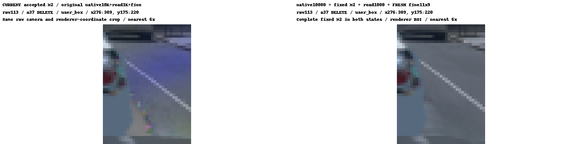
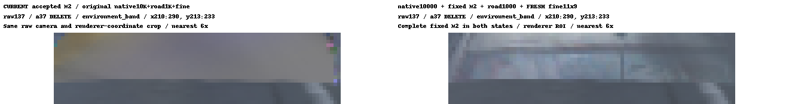
来源：严格固定域/共同ROI完整CPU对照；重点8组keep/delete ROI；实际10K发布/10002恢复/road/校色收据。
亮片归因：净亮化由static主导，车形结构还未唯一拆因
raw137预先定义的亮化315像素为候选meanRGB−参考meanRGB>0.08，位于[210,213,290,233]内，实际bbox [213,213,262,226]。直接记录预乘RGB项，static alpha×T均值从0.177727升至0.828968；各分量增量如下，数值重构残差约3×10⁻⁹。
| 315点实际预乘RGB项 | R增量 | G增量 | B增量 |
|---|---|---|---|
| native static | +0.29334639 | +0.33319491 | +0.36675649 |
| env×T | -0.20062531 | -0.19171733 | -0.18620478 |
| road | +0.00001877 | +0.00002200 | +0.00002847 |
| 固定M2 a6 | +0.00000000 | +0.00000000 | +0.00000000 |
| 动态a37 | +0.00000000 | +0.00000000 | +0.00000000 |
| 最终RGB净增量 | +0.09273984 | +0.14149958 | +0.18058019 |
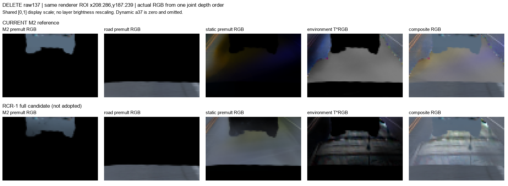

固定域与天空：改善、回退都保留
| 固定域 | 像素 | 参考MAE | RCR-1 MAE | 差值（正为回退） |
|---|---|---|---|---|
| keep49 / road_target | 1075281 | 0.03168865 | 0.01645815 | -0.01523050 |
| keep49 / a6_visible_RGB | 39308 | 0.03757664 | 0.03753720 | -0.00003944 |
| keep49 / a37_visible_RGB | 536128 | 0.01472654 | 0.01491633 | +0.00018979 |
| delete4_HELD / road_target | 19956 | 0.01653273 | 0.00947815 | -0.00705458 |
| delete4_HELD / a6_visible_RGB | 2760 | 0.03553222 | 0.03561446 | +0.00008224 |
| keep49 / actual sky | 1948391 | 0.02317623 | 0.02051919 | -0.00265704 |
keep a6 pooled接近且略降，但23/49帧回退，最大raw129 +0.00052418；a37有32/49帧回退，最大raw122 +0.00202537。delete a6 pooled小幅回退，最大raw137 +0.00028910。道路与天空逐帧MAE均无回退；此前人工评审记录的新增亮片继续作为开放项。
| 49keep天空均值 | 参考预测 | RCR-1预测 | 同一GT |
|---|---|---|---|
| R | 0.56968429 | 0.56969915 | 0.57377298 |
| G | 0.65480034 | 0.65464037 | 0.65960770 |
| B | 0.79958200 | 0.79895743 | 0.80404071 |
天空49keep共1,948,391像素，raw、mask SHA、count与GT通道sum/mean严格匹配，使用实际native reader天空掩码，未按颜色挑像素。HELD9/BUILD40、四delete与逐帧最大回退完整保存在CSV；delete道路使用重观测proxy，不称为真实删车RGB GT。
49keep/HELD9/BUILD40/delete4汇总；逐帧；四delete；天空汇总/RGB均值；天空逐帧。
实际更新与其它计算开销
| 实际完成训练更新 | 次数 |
|---|---|
| 前期颜色后拟合尝试（失败分支，含smoke/恢复） | 12,532 |
| 增长来源control/joint与half反事实（3×1000） | 3,000 |
| RCR-1 full-joint native0→10K | 10,000 |
| native预检/完整恢复（3+2+2+2） | 9 |
| global4K parent道路工程预检 | 34 |
| global10K parent新road正式 | 1,000 |
| global10K parent新road预检/恢复 | 34 |
| 合计 | 26,609 |
完整10K通过原native_publish_checkpoint_event发布全状态，真实10000→10002恢复差异为空；新road正式1000加32步smoke和2步恢复，合计1034。前期12,532均为本会话颜色后拟合失败候选，不并入另一条车辆appearance实验。
| 其它计算 | 实际数量 | 是否SGD更新 |
|---|---|---|
| 正式fresh6×5 / 11×9鲁棒线性求解 | 36 + 18 = 54 | 0 |
| 4K parent finalizer工程预检（单帧设计） | 另36 + 18 = 54；与正式合计已知108次 | 0，单列工程开销 |
| 完整M2 49keep+4delete、参考天空、反事实/层贡献渲染与评价 | 实际完成，原收据/图/JSON保留 | 额外SGD 0，仍有GPU渲染开销 |
| backgroundJoint1 | 只有本地源码与CPU mask/梯度审核 | 0；未上传、未GPU、未验证 |
最终26,609更新账本；正式校色/渲染工程收据。工程PASS不等于画质PASS，GPU wall time不能用SGD次数替代。
当前采用范围与证据边界
RCR-1证明补回global约束能阻止该族持续正B，但没有恢复旧single的1颗拓扑。旧不clone的唯一原因、首个正B梯度唯一来源仍未证明。新的亮片不是固定M2写回native SH造成；当前只确认合成项与像素监督覆盖，不能再把推测写成根因。
当前采用RCR-1 delete，范围为异常蓝色RGB修复。固定M2资产不变，原管线作为reference保留；亮片与a5独立排查仍开放，未新增完整画质无回退结论。此次只更新本地处置，不新增GPU、训练或关机操作。backgroundJoint1仍只是未运行备选，没有自动实验队列；实际代码、原模型和历史失败分支保留。
历史机制、growth与反事实证据（部分表截至9K，保留原记录）
完整当前算法的真实GPU反事实：只改家族的临时渲染输入
三个分支共用原始raw相机、时间、同一个M2与同一个光栅器。cleanSH保留现有64颗的几何、opacity和时间状态，仅换渲染kwargs里的颜色；hide64会改变遮挡，二者的意义不能混同。原native家族所有参数与M2全部27个tensor在GPU运行前后CPU逐值相等，native/road/fine的Runtime检查通过。
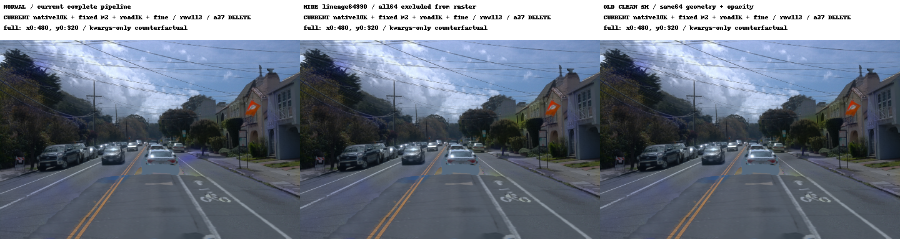
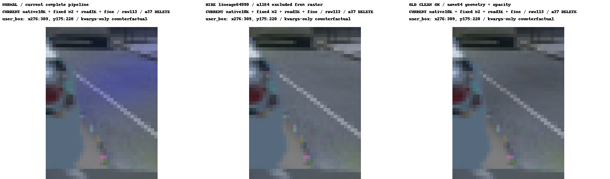
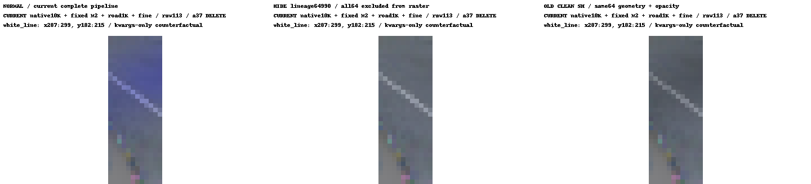
对照：同一白线窄框，a37 KEEP，完整算法三列
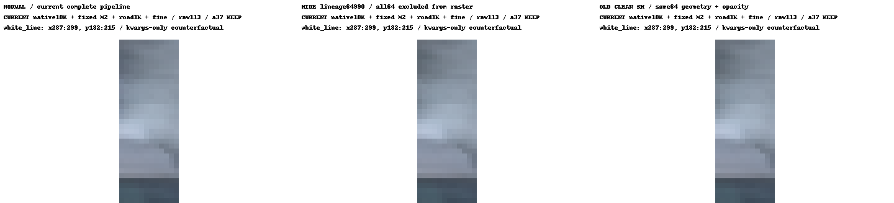
KEEP时该族平均alpha×T=0.00271458；DELETE时为0.10115444，后者是前者的37.2634倍。这是该窄ROI与固定共同掩码下的比值，不代表整幅图或所有raw。
删37主要显露了预存蓝色贡献。同一族的SH未改，raw113窄框平均alpha×T从0.00271458升至0.10115444（37.26倍），平均B贡献从0.003443升至0.128773。cleanSH下alpha、depth、各group与family alpha×T逐值相同，图像normal−cleanSH与直接记录的family RGB最大差仅1.19e-07。这把该框的颜色来源与遮挡变化区分开。
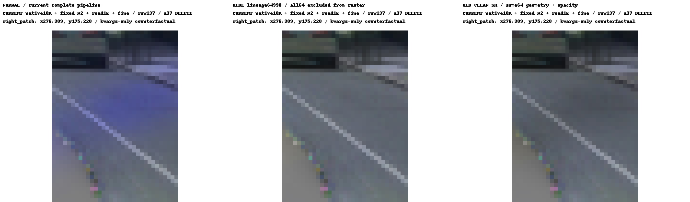
| raw / 状态 / ROI | 完整管线反事实 | 像素 | 族alpha×T均值 | RGB MAE | signed blue误差 | absolute blue误差 | 正误差>0.05像素 |
|---|---|---|---|---|---|---|---|
| raw113 · delete · user_box | 当前完整管线 | 799 | 0.074095 | 0.040993 | +0.078456 | 0.084625 | 462 |
| raw113 · delete · user_box | 仅hide64 | 799 | 0.000000 | 0.013063 | -0.011530 | 0.014677 | 0 |
| raw113 · delete · user_box | 仅cleanSH | 799 | 0.074095 | 0.035559 | -0.014725 | 0.016258 | 0 |
| raw113 · keep · white_line | 当前完整管线 | 253 | 0.002715 | 0.166226 | +0.025735 | 0.025833 | 2 |
| raw113 · keep · white_line | 仅hide64 | 253 | 0.000000 | 0.166245 | +0.022468 | 0.022797 | 0 |
| raw113 · keep · white_line | 仅cleanSH | 253 | 0.002715 | 0.165328 | +0.022292 | 0.022662 | 0 |
| raw113 · delete · white_line | 当前完整管线 | 253 | 0.101154 | 0.054073 | +0.118975 | 0.119048 | 224 |
| raw113 · delete · white_line | 仅hide64 | 253 | 0.000000 | 0.010330 | -0.003199 | 0.007072 | 0 |
| raw113 · delete · white_line | 仅cleanSH | 253 | 0.101154 | 0.044909 | -0.009798 | 0.010389 | 0 |
| raw137 · delete · right_patch | 当前完整管线 | 1329 | 0.062319 | 0.041894 | +0.068257 | 0.074090 | 664 |
| raw137 · delete · right_patch | 仅hide64 | 1329 | 0.000000 | 0.020039 | -0.007567 | 0.013927 | 4 |
| raw137 · delete · right_patch | 仅cleanSH | 1329 | 0.062319 | 0.035404 | -0.010067 | 0.015065 | 4 |
| raw137 · delete · environment_band | 当前完整管线 | 66 | 0.001148 | 0.062176 | -0.001901 | 0.035728 | 8 |
| raw137 · delete · environment_band | 仅hide64 | 66 | 0.000000 | 0.062314 | -0.003307 | 0.036062 | 8 |
| raw137 · delete · environment_band | 仅cleanSH | 66 | 0.001148 | 0.062101 | -0.003369 | 0.036044 | 8 |
blue定义为B−(R+G)/2；误差相对于同一观测target。上表同时给有符号与绝对误差，负值不能直接称作颜色正确。超阈值为正blue误差>0.05。图像仅展示诊断，PNG编码前浮点数据用于指标。
证据：反事实汇总与ROI、原始浮点指标、完整管线/不变量；raw137完整三列图。

raw137仍有8点残差：环境项主导，旧env交换被反事实否决
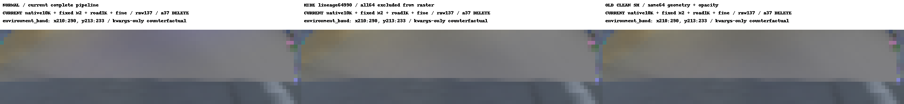
hide64后这8点的家族alpha×T均为0，但正blue误差仍超阈值；normal中7点无该族贡献，(286,213)的家族alpha×T=0.0090041。因此不能只用64990族解释这些残差。M2与a37贡献均为0，7点road贡献为0。按现有float ROI把RGB=Gaussian+(1−alpha)·env逐点分解，8点环境超额都占主导，环境占合计正超额的95.62%；4点T>0.98。分解残差为0。
| 像素(x,y) | T | env超额 | Gaussian超额 | 总blue误差 |
|---|---|---|---|---|
| (211, 213) | 0.34203 | +0.148678 | -0.087027 | +0.061650 |
| (286, 213) | 0.84307 | +0.070249 | -0.009231 | +0.061018 |
| (210, 214) | 0.34916 | +0.152109 | -0.089771 | +0.062337 |
| (288, 223) | 0.98254 | +0.044976 | +0.007608 | +0.052584 |
| (288, 224) | 0.98952 | +0.055470 | +0.009037 | +0.064506 |
| (288, 226) | 0.98725 | +0.220819 | +0.011002 | +0.231821 |
| (289, 226) | 0.98351 | +0.059395 | +0.010490 | +0.069885 |
| (288, 227) | 0.36424 | +0.081277 | -0.002541 | +0.078737 |
分解用env_excess=blue(T·env)−T·blue(target)，Gaussian_excess=blue(G)−alpha·blue(target)，两者相加严格等于总blue误差。Gaussian负超额可能抵消环境超额，不能用net总误差作正贡献份额的分母。
这里定位的是当前合成中的发色项，不是“环境训练单独造成全部问题”的证明。高T也包含当前覆盖较薄的影响；旧env交换的真实GPU结果如下，证明了局部贡献，同时否决直接交换作为修复。
数据：8点逐项环境分解与限制。
仅交换旧cleanEnv：固定8点变好，但整框明显失败，拒绝作为修复
两端均hide64，完整M2 + road/gate + fine始终开启；仅以独立旧clean EnvLight在同一当前相机ray上采样，替换最终组合的env输入。没有改原Runtime、模型、opacity、几何或SH，没有训练。当前env端逐值复现先前hide64；premultiplied RGB、alpha、depth、四组件alpha×T两端最大差均为0，ΔRGB=T·Δenv最大偏差4.77×10⁻⁷。
交换后，预先固定的8点正blue误差>0.05从8→0，最大值从0.23182→0.02058。这支持当前env是这8点的主要可移除发色贡献。但不能只看固定8点：同一66背景像素里出现另4个新蓝点，RGB MAE从0.06231升至0.14047；右patch与raw113用户原框的退化更大。
| delete ROI | 仅env状态 | 背景像素 | RGB MAE | absolute blue误差 | 正blue误差>0.05像素 |
|---|---|---|---|---|---|
| raw137 · environment_band | 当前env | 66 | 0.06231441 | 0.03606181 | 8 |
| raw137 · environment_band | 仅换旧cleanEnv | 66 | 0.14046690 | 0.02327181 | 4 |
| raw137 · right_patch | 当前env | 1329 | 0.02003937 | 0.01392749 | 4 |
| raw137 · right_patch | 仅换旧cleanEnv | 1329 | 0.27807251 | 0.05501395 | 197 |
| raw113 · user_box | 当前env | 799 | 0.01306328 | 0.01467675 | 0 |
| raw113 · user_box | 仅换旧cleanEnv | 799 | 0.33922896 | 0.06111155 | 143 |
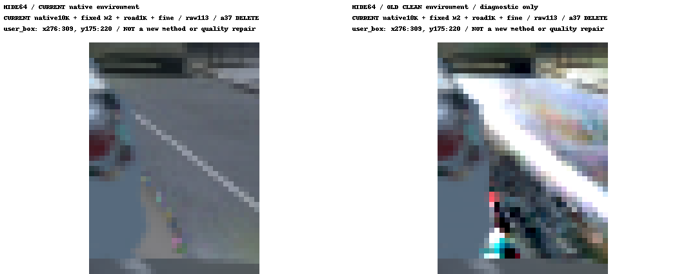
证据：预先固定8点、同ROI浮点指标/不变量、交换范围、拒绝修复摘要；raw137横条完整算法两端图。

源码边界：训练时形成native SH，推理不向它写回
原ownership native10K在加载前已保存64990族64颗蓝SH：DC R/G全为−0.004235208，B=0.101138～1.066587，高阶SH只有B非零。原生检查点中的蓝色，与后续删车使它更可见，是两个环节。
| 当前推理组件 | 实际操作与源码位置 | native静态SH |
|---|---|---|
| 加载原native10K | active editor_common:43–58直接restore(training_args=None)，无optimizer且冻结；owner5 GaussianModel:110–137从payload赋值DC/rest，169–172以新cat读取。 | 仅恢复已保存值 |
| 删a37 / M2补a6 | scene_runtime.scene:219–237；baseline delete只mask动态a37，替换模式移除全部动态native a6，加入完整M2，再于delete移除a37。静态行始终为前缀。 | 不写回、不删该静态族 |
| road gate | scene_runtime._static:194–200对临时rows['opacities']做index_copy。仅选中7/64族点，factor=.984877～.999774；主蓝点1071516为.9997248。 | 不写回；仅透明度输入变化 |
| fine与road SH | scene_runtime:103–120仅改独立road_colors；_road:202–210的SH赋值只作用新road rows。merge_rows:39–51以新cat拼接。 | 不写回；道路自身颜色变化 |
| 共享深度序与env | scene_runtime.render_rows:247–258一次光栅后加(1−alpha)env；遮挡、alpha×T与输出像素可随编辑而变。 | 不写回；像素贡献可变 |
当前native模型/prepare_rasterization实际来自owner5源，只有road merge/raster helper按文件载入v41。SHAsset.set_coefficients只写独立资产自己的coefficients，不是native静态SH。
另一层改动发生在为编辑改造的native ownership训练：integrate_native:26–38把旧compose_hybrid_loss换成Ownership.terms；native_ownership:215–231把背景光度折为static2，缺旧1×joint global RGB和sky RGB（现有sky是opacity项）。这是10K生成之前的监督改变，不是M2/delete推理在临时造蓝。
逐句证据与完整远端文件路径：25组源码行号审计；加载前CPU家族/road gate。
训练端的单变量证据：监督形成颜色，增长统计影响放大
目标为raw103点云行65911、初始RGB=0的lineage 64990。历史旧single 10K保留1颗，DC三通道负、higher SH全零；新ownership 100步已出现R/G负而B正，当时尚未执行首次SGCM（550）或普通增密（600）。因此“颜色失衡先形成、clone后来放大”有时序证据；旧版为何不clone的唯一原因尚未证实。
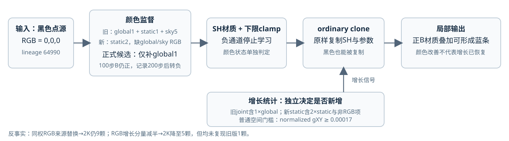
增长RGB分量替换：从相同原生1K完整状态各追加1K。两组都计算辅助梯度；候选只用下式改普通静态XY统计，主loss、非RGB XY、时间来源、SGCM及阈值保持原样。首步19个优化器梯度槽逐值不变。
控制与替换组都在1500步首次clone，2K均为9颗。这个结果反驳“只换RGB增长图像来源就能恢复旧版不增长”的充分解释，但两组均使用同权2×RGB，不能排除增长量级问题；它也不等于恢复旧目标或旧时间统计。
half反事实：候选仅用g_total−0.5·g_static_RGB，把普通XY的RGB增长分量从2降至1，主loss仍为static2。1100步归一化XY从控制的0.00005987降至0.00002986；1500从0.00017770降至0.00013023，未过0.00017门槛。首clone延后至1700，2K族数9→5，但仍不是旧版1颗。其B仍为正（约0.17535–0.34443），因为此臂没有补global。half只作为量级贡献的反事实，不采纳为正式修复。
仅补global1：相同seed从0训练1K，仅多加整图joint RGB（0.8 L1+0.2 DSSIM、系数1）。static2、其它项及增长路径不变。1000步相机、time shift和LR与历史原native逐步一致，核心源与生成training一致，配置仅model_path不同；完整恢复后又运行2步通过。
global单项候选的最小补丁：global_rgb_probe.py的LossProbeOwnership.terms先调用原terms，再仅增加第17行；原native_ownership.py与integrate_native.py不改。没有同时恢复sky RGB，也没有采用half。此处保留原9K诊断节点及随后完整10K/新road组合的历史评审；当时因亮片未采用。当前用户已采用异常蓝色RGB修复，范围与开放项见页首。
| 步数 | ownership控制 B（未clamp） | 仅补global1 B | 控制/global族数量 |
|---|---|---|---|
| 100 | +0.02998134 | +0.03053385 | 1 / 1 |
| 500 | +0.01711002 | -0.00438643 | 1 / 1 |
| 1000 | +0.19196406 | -0.00438643 | 1 / 1 |
| 2000 | +0.44048～+0.60547（重放） | -0.00438643 | 9 / 5 |
| 3000 | +0.23951～+0.67055 | -0.00438643 | 24 / 7 |
| 4000 | 未取对应原节点 | -0.00438643 | — / 7 |
| 5000 | 未取对应原节点 | -0.00438643 | — / 7 |
| 6000 | +0.17854～+0.86546 | -0.00438643 | 36 / 7 |
| 7000 | 未取对应原节点 | -0.00438643 | — / 7 |
| 8000 | 未取对应原节点 | -0.00438643 | — / 7 |
| 9000 | 未取对应原节点 | -0.00438643 | — / 7 |
表中“ownership控制”是未补global的新ownership目标，不是旧single干净模型；1K及以下为历史节点，2K为本次控制重放，3K为原native历史节点。
global臂100步B仍正，首次记录到三通道全负为200步；历史诊断表截至9K，目标族7颗仍全负、higher SH全零。它支持“遗漏global监督是该族持续正B学习的一个因果因素”，不证明首个正B梯度由哪一项单独产生。黑色材质没有阻止clone。反过来，I=αc+(1−α)env中即使c=0，移动点仍改变后方遮挡，不能把黑色点称作RGB的XY梯度为零。
数据：global族日志、global1K–9K终点/restore/returned/摘要索引、协议核对、增长反事实、half CPU验收、最小global补丁位置。
首个clone是空间XY越阈；旧窗口缺数值日志
| 组别 | 首次clone / 检查窗口 | 归一化gXY | 归一化signed gT | 后续数量 |
|---|---|---|---|---|
| 旧诊断重放 | 1300 / 1500 | 未保存 | 未保存 | 未入选clone/split |
| 原统计控制 | 1500 | 0.0001776985 | -1.341e-07 | 9颗 @2K |
| 同权2×RGB来源替换 | 1500 | 0.0002005461 | -1.038e-07 | 9颗 @2K |
| RGB增长分量减半 | 1700 | 0.0001949569 | 4.923e-09 | 5颗 @2K |
| 仅补global RGB | 1300 | 0.0001788519 | -2.206e-08 | 5颗 @2K |
各当前组的共同XY门槛为0.00017，时间门槛为0.002；首clone均为空间触发，时间未触发。global在1300步denom=100、XY累积0.01788519，父row64520实际产生child605568，族1→2。half则到1700步gXY=0.00019496时才首次clone。颜色被压黑与复制数量减少是两项不同观察。
旧资料边界：这里只检查了formal_baseline_r1的旧诊断重放，不把它称为历史正式原件。1300的event73–76、1500的event93–96都没有64990族入选或被移除；NPZ只有lineage ids/counts直方图，没有逐点gxy、gt、denom。不能把缺项写成0，也不能伪造旧窗口的数值阈值对照。
数据：旧重放NPZ字段与窗口计数。
旧新具体梯度路径
旧renderer的static_feature/static_depth来自独立static raster；未加static前缀的feature/depth/alpha来自joint raster。旧普通增长读joint screen；新普通增长读独立static screen，并单独替换时间统计来源。
| 损失 | 旧joint XY增长 | 新static XY增长 |
|---|---|---|
| global RGB | 整图joint，系数1 | 原目标缺项；本次补回后仍不直接接入isolated screen |
| static RGB | 独立static图，不接joint screen | 直接接入，系数2，排除扩大的actor union/collar |
| sky RGB / sky opacity | 两项都来自static图，不接joint screen | sky RGB仍缺；sky opacity接入static screen |
| depth、depth smooth、velocity smooth、opacity entropy | 由joint depth/feature/alpha计算 | 改为static预测与background域，仍直接接入 |
| duration / velocity | isolated static_feature除以joint alpha，故仍通过分母接入joint XY | 分子/分母都用static图，并限制background域 |
| NPS | static_feature/static_alpha，独立static图，不接joint screen | 当前terms没有该项 |
| dynamic RGB / opacity、actor项 | 独立dynamic图，不接joint静态screen | 独立actor图，不接static_growth |
| ownership、depth_joint、static_prefix | 旧目标没有这些显式项 | joint或独立prefix图，不接当前static_growth |
因此不能把duration/velocity说成“旧版完全不接”。新ordinary XY实际接static_rgb、depth_background、sky、duration、velocity、smooth_depth、smooth_velocity、background_entropy。旧joint增长中的光度项是1×global；独立1×static不会进入旧joint screen。新把背景光度折为2×static并全部交给static_growth，RGB增长量级随之变化；half说明它确实贡献增长放大。但尚未确定旧版不clone的唯一原因：旧窗口逐点梯度缺失，非RGB预测、归一化与背景域也同时有差异。
源码入口：旧renderer:88–139、旧train:381–410/579–594、新native_ownership:96–153/184–230、integrate_native:39–57。各原路径保存在CPU审计来源中。
每1K原生readout：共同三帧，仅供诊断
| 原生检查点 | full RGB MAE | road RGB MAE | protected RGB MAE |
|---|---|---|---|
| 原ownership · 1K（历史） | 0.049035 | 0.048964 | 0.046563 |
| 原ownership · 2K（本次重放） | 0.048916 | 0.061386 | 0.048096 |
| 同权RGB来源替换 · 2K | 0.049571 | 0.061047 | 0.048643 |
| RGB增长分量减半 · 2K | 0.043962 | 0.058387 | 0.042581 |
| 仅补global1 · 1K | 0.044218 | 0.043321 | 0.041090 |
| 仅补global1 · 2K | 0.048437 | 0.064841 | 0.047692 |
| 仅补global1 · 3K | 0.134935 | 0.095876 | 0.146742 |
| 仅补global1 · 4K | 0.026420 | 0.020772 | 0.025359 |
| 仅补global1 · 5K | 0.022891 | 0.015988 | 0.022947 |
| 仅补global1 · 6K | 0.147751 | 0.095087 | 0.166309 |
| 仅补global1 · 7K | 0.018649 | 0.010970 | 0.018524 |
| 仅补global1 · 8K | 0.016498 | 0.008936 | 0.016633 |
| 仅补global1 · 9K | 0.156861 | 0.096647 | 0.177549 |
RGB MAE，越小越低。统一raw105/113/130，按每帧sum/count重算；full/road/protected计数分别为460800/64416/385376。growth原摘要还含137，本表已排除，避免帧集不一致。2K global的road误差高于2K控制，不能写成所有区域都改善。
该reset是原合同（interval=3000、densify_until=15000、policy=densification_only），没有为试验更改。paper路径先完成优化/增密/reset，再调用complete_eval/readout；因此3K/6K/9K的状态与邻近恢复阶段不可直接当稳定终点比较。
数据：共同帧pooled重算及原摘要；reset配置/代码顺序/三个读出节点。
无road的M2拼接诊断：仅引用同窄ROI253浮点域
| 无road诊断 | 状态 | 像素 | RGB MAE | signed blue误差 | absolute blue误差 | 正blue误差>0.05占比 |
|---|---|---|---|---|---|---|
| 未补global原ownership10K + M2 | keep | 253 | 0.1662254035 | 0.0257359222 | 0.0258334242 | 0.0079051387 |
| 未补global原ownership10K + M2 | delete | 253 | 0.0544411018 | 0.1179520935 | 0.1181273460 | 0.8774703741 |
| global4K + M2 | keep | 253 | 0.0167319253 | 0.0022836267 | 0.0048500909 | 0.0000000000 |
| global4K + M2 | delete | 253 | 0.0114354044 | -0.0068044937 | 0.0086905416 | 0.0000000000 |
| global5K + M2 | keep | 253 | 0.0150512541 | 0.0021131700 | 0.0048377207 | 0.0000000000 |
| global5K + M2 | delete | 253 | 0.0167080332 | -0.0013755236 | 0.0049519455 | 0.0000000000 |
raw113、裁剪[287,182,299,215]（右/下边界不含），各条目评价253个观测背景像素；均为PNG编码前浮点结果。signed blue为有符号误差；同时保留绝对blue误差，避免把偏黄误写成去蓝成功。keep/delete只改变checkpoint a37；M2 a6保持完整。此表不能代替native10K+road+fine/M2最终组合验收。